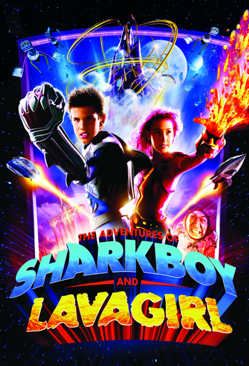
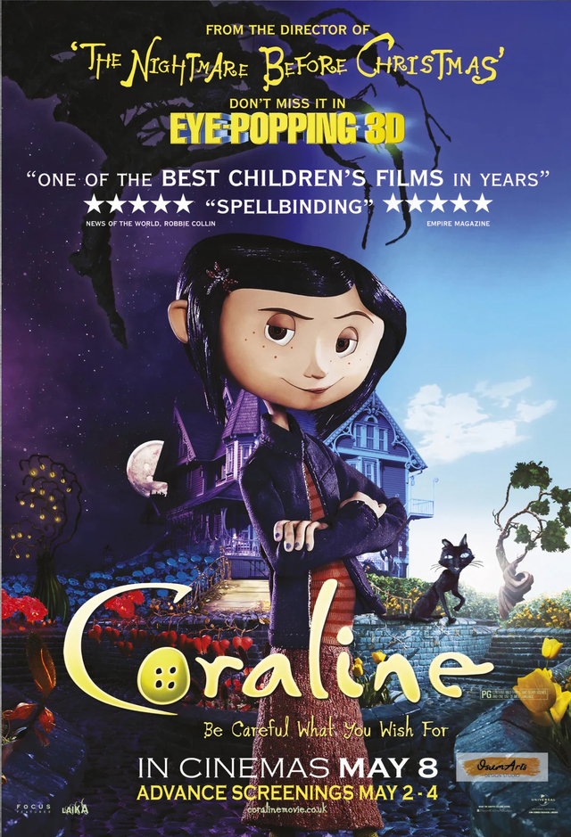
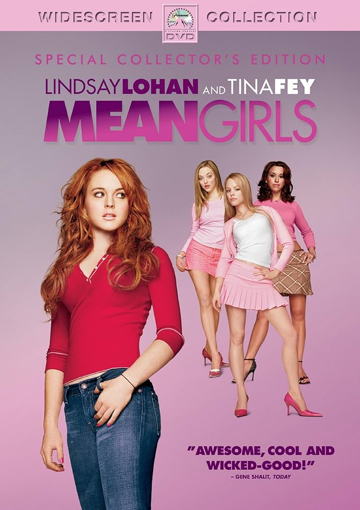

The Best Movies According to Daniel
My top 3 movies of all-time.

- Sharkboy and Lavagirl
-
Maybe I'm a little biased because of all the times I watched it as a kid,
but it's a great movie to be honest.

- Coraline
-
I love stop motion movies, especially ones with such a great and quite
twisted story like this one. Also watched it a couple of times and I still
do nowadays.

- Mean Girls (2004)
-
Classic mean high schools girls movie and it's still a bop to this day.